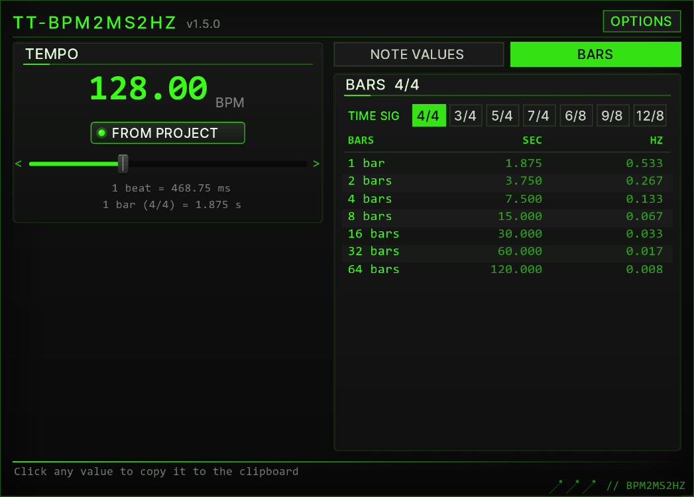
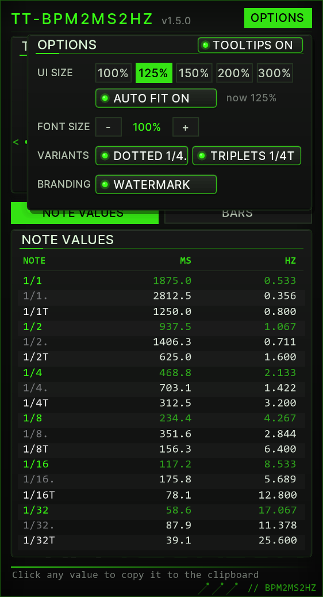
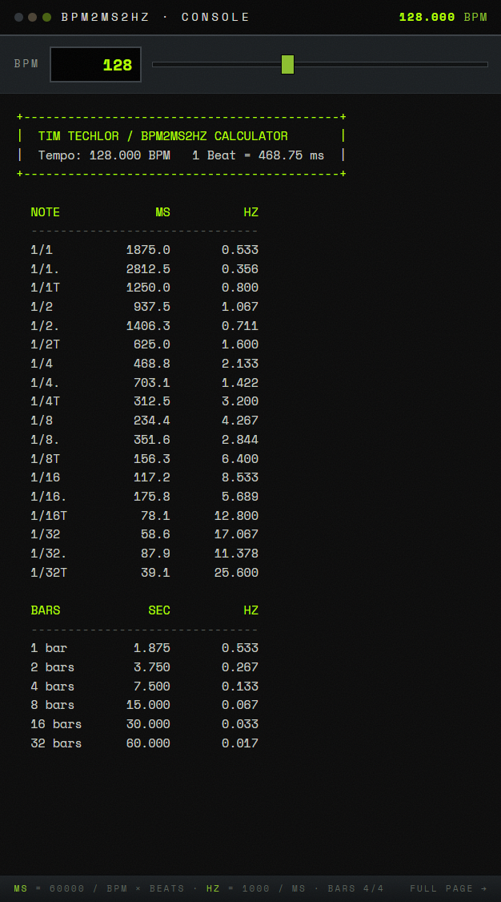

01Three editions
All three editions compute the same numbers with the same formulas. They differ only in where the tempo comes from and how you read the result.
| Edition | Tempo from | Get it |
|---|---|---|
| REAPER window (ReaImGui) | the project tempo, or a manual tempo | ReaPack package TT-BPM2MS2HZ (section 02); this manual describes it from section 03 on |
| Web edition | typed in, slider or TAP | timtechlor.de/BPM2MS2HZ — runs in any browser, nothing to install (section 09) |
| Console edition | the project tempo | TT_BPM_Converter.lua, download from the web edition; prints the table into the REAPER console |
02Install
- Install ReaPack (one file into the UserPlugins folder, restart REAPER).
- Extensions → ReaPack → Import repositories…, paste
https://raw.githubusercontent.com/timtechlor/reapack-TimTechlor/main/index.xml - Extensions → ReaPack → Browse packages, search for BPM2MS2HZ (the package is listed as TT-BPM2MS2HZ; up to version 1.0.0 it was called “BPM2MS2HZ Calculator”), install, Apply.
- The window needs ReaImGui (“ReaImGui: ReaScript binding for Dear ImGui”, repository ReaTeam Extensions, which ReaPack ships with). Install it the same way and restart REAPER.
- Run it from Actions → Show action list → search “BPM2MS2HZ”. Bind it to a key or a toolbar button if you use it often.
TT_BPM_Converter.lua. Each run clears the console and prints the table for the current project tempo.03The window at a glance
The window is drawn in the TimTechlor UI kit look, like the plug-in fronts: dark panels, Acid Green accents, LED switches. From top to bottom:
- Header — the name, the version (
v1.5.0) and the OPTIONS button (section 07). - TEMPO — the current tempo as a large number, the FROM PROJECT switch, the tempo slider and two info lines: the length of one beat in milliseconds and of one bar in seconds (section 04).
- NOTE VALUES / BARS — two tabs: note values from 1/1 to 1/32, or whole bars from 1 to 64 (section 05).
- Footer — “Click any value to copy it to the clipboard”; after a click it shows the copied value for three seconds (section 06).
Hold the mouse over any control for a moment and a tooltip explains it. In a wide window the TEMPO panel and the table sit side by side; in a tall window they are stacked. The window picks the arrangement that shows everything at the larger size.

04Tempo
- FROM PROJECT (LED on, number green) — the tempo follows the project tempo live, including tempo automation during playback.
- Slider — click or drag to set a manual tempo from 40 to 300 BPM; it snaps to 0.1 BPM. Touching the slider switches FROM PROJECT off and the number turns white. The mouse wheel over the slider moves the tempo by 1 BPM, with Shift by 0.1 BPM.
- Switch FROM PROJECT on again to return to the project tempo.
- The number flashes white briefly whenever the tempo changes.
05Reading the tables
ms = 60000 / BPM × beats (1 beat = 1 quarter note)
Hz = 1000 / ms| Label | Meaning | Factor | Row colour |
|---|---|---|---|
1/4 | plain note value, here one beat | ×1 | green |
1/4. | dotted | ×1.5 | grey |
1/4T | triplet | ×2/3 | white |
NOTE VALUES runs from 1/1 to 1/32, each with its dotted and triplet variant (both can be hidden in OPTIONS). Milliseconds have one decimal, Hertz three.
BARS lists 1, 2, 4, 8, 16, 32 and 64 bars as seconds and Hertz. Pick the time signature first with the buttons next to TIME SIG (4/4, 3/4, 5/4, 7/4, 6/8, 9/8, 12/8): a 6/8 bar is six eighth notes, so it is shorter than a 4/4 bar. The info line under the tempo slider uses the same time signature. The choice is saved.
Example at 128 BPM: one beat is 60000 / 128 = 468.75 ms, so 1/4 reads 468.8 ms and 2.133 Hz, and one 4/4 bar is 1.875 s. At 120 BPM: 1/4 = 500.0 ms = 2.000 Hz, 1/4. = 750.0 ms, 1/4T = 333.3 ms.
06Copying values
Click any value in the MS, SEC or HZ column: it is copied to the clipboard exactly as shown (for example 468.8), and the footer confirms it with >> copied: 468.8. Paste it into the plug-in field with Ctrl+V (Cmd+V on macOS). The value under the mouse lights up green before you click.
07OPTIONS
The OPTIONS button in the header opens the OPTIONS box. While it is open, the rest of the window does not react to clicks; click OPTIONS again or anywhere outside the box to close it. Every setting is saved and survives REAPER restarts.

| Control | What it does |
|---|---|
| TOOLTIPS ON / OFF | Shows or hides the tooltips of all controls. Default: on. |
| UI SIZE 100 / 125 / 150 / 200 / 300 % | Resizes the window so that its content is shown at that size. The highlighted button is the current size. |
| AUTO FIT ON / OFF | On (default): when you drag the window edge, the content rescales to the new window size — the largest whole percentage at which everything fits, 25 to 400 % — and stays centred; no scrollbars. A UI SIZE button still sets a fixed size, which holds until you change the window again. Off: the size stays where it is; if the window is smaller than the content, scrollbars appear. Switching AUTO FIT on fits the content to the window at once. “now” shows the current size. |
| FONT SIZE − / + | Text size of the tempo number, the info lines and the tables, from 80 to 150 % in 5 % steps. The window rescales so that the larger tables still fit. |
| DOTTED 1/4. / TRIPLETS 1/4T | Show or hide the dotted and the triplet rows of NOTE VALUES. |
| WATERMARK | Shows or hides the faint Tim Techlor wordmark in the background. |
08In practice
Delay times
Read the MS column and type the value into a delay that has no host sync. At 128 BPM the dotted eighth (1/8., 351.6 ms) is the classic ping-pong spacing; a plain 1/4 is 468.8 ms.
LFO rates
The HZ column is the LFO speed that locks to the grid: at 128 BPM, 1/4 = 2.133 Hz and 1/16 = 8.533 Hz. Auto-pan, tremolo and filter sweeps then move with the track instead of drifting against it.
Release and sidechain
Whole bars come as seconds: 1 bar = 1.875 s at 128 BPM. A compressor release of one bar keeps the pump breathing with the track instead of choking it; for a tight kick duck, start from the 1/8 or 1/16 value.
Arrangement
How long is a 16-bar break at 128 BPM? The BARS tab says 30.000 s. Useful for risers, transitions and for checking whether a loop fills exactly two bars.
09Web edition
The web edition reproduces the console output of the REAPER console edition line by line. It lists bars from 1 to 32 and assumes 4/4.
- Tempo — type it into the BPM field or drag the slider. The table updates live.
- TAP — tap along with the beat; the tempo is averaged over the last taps. A pause of more than three seconds starts a new measurement.
- COPY — copies the console table as text.
- Popup — opens a compact window with only the tempo input and the live table, to pin next to your DAW.

10Troubleshooting
- The window does not open and REAPER reports a missing ImGui function — ReaImGui is not installed, or REAPER was not restarted after installing it (section 02).
- The content is tiny or huge — AUTO FIT scales it to the window. Drag the window edge, or click a UI SIZE button in OPTIONS.
- The REAPER console says “UI kit view failed, using the classic view” — the window falls back to the plain 1.0.0 layout so you can keep working. Please report the message that follows it.
- The console edition prints “No valid project tempo found.” — open or create a project and run it again.
- The values do not match a tempo change later in the song — the window uses the tempo REAPER reports as current. For a section with a different tempo, set that tempo manually with the slider (or in the web edition).
- COPY does nothing in the browser — the browser blocked clipboard access; open the page directly (not inside a frame) and allow clipboard access.
11Changelog
1.5.0 — TT-BPM2MS2HZ, UI kit look
- New name: TT-BPM2MS2HZ (formerly “BPM2MS2HZ Calculator”); file name and saved settings stay the same.
- New look after the TimTechlor UI kit 7: panels, LED switches, tempo slider and value tables drawn like the plug-in fronts; version shown in the header.
- Every control has a tooltip; OPTIONS > TOOLTIPS ON / OFF switches them off.
- NEW: OPTIONS > AUTO FIT ON / OFF (default on): dragging the window edge rescales the content (25 to 400 %); UI SIZE buttons 100 / 125 / 150 / 200 / 300 % resize the window. Saved.
- Wide windows show the TEMPO panel and the table side by side.
- Time signature as buttons instead of a drop-down list; mouse wheel over the tempo slider: 1 BPM (Shift: 0.1 BPM).
1.0.0
- First release via ReaPack: REAPER window with NOTE VALUES and BARS tabs, project or manual tempo, click to copy, OPTIONS for font size, note variants and watermark.